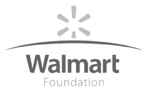
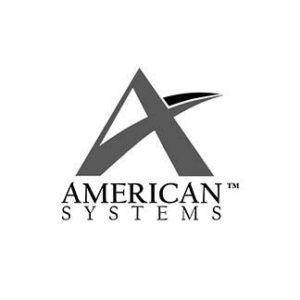

What We Do
SOLID connects policy skills, data, technology, and people to turn complex workforce challenges into actionable, trusted solutions.
Turning Workforce Complexity Into Opportunity
SOLID helps organizations understand, recognize, and connect learning, skills, and experience to education and workforce opportunities. We combine deep subject matter expertise, evidence-based methodologies, skills and workforce intelligence, applied AI and data, and human-centered technology to move from insight to implementation.
Our capabilities have been developed and proven through more than two decades of work in workforce environments including military-involved populations. Today, we apply that expertise across systems, additional populations, and industries, making skills and experience more visible, trusted, portable, and actionable.
Policy, Standards, and Workforce Analysis
Translating policy, standards, and evidence into practical workforce strategies.
SOLID helps organizations navigate the policies, standards, evidence, and workforce conditions that shape education, credentialing, and employment. We combine deep domain expertise with evidence-based analysis and repeatable methodologies to translate complex information into strategies, frameworks, and solutions that can be put into practice.
See Our Capabilities
- Policy Analysis and Advising – Interpreting policy and providing subject-matter expertise, analysis, and recommendations to inform decisions, strategy, and implementation.
- Industry and Workforce Standards Analysis – Interpreting, aligning, and applying standards that support trusted credentials and consistent representation of skills, learning, and workforce information.
- Work, Learning, and Credential Analysis – Analyzing occupations, learning and training, and credentials to understand what they represent, the skills and competencies they reflect, and how they connect to workforce requirements and education and career opportunities.
- Workforce Intelligence and Insights – Combining labor-market, occupational, education, and other data to identify needs, gaps, opportunities, and trends that inform workforce decisions and strategies.
- Methodology Development and Validation – Developing repeatable, evidence-based approaches for analyzing complex workforce information, applying consistent criteria, validating results, and scaling solutions across contexts.
What differentiates SOLID: We don’t stop at research or recommendations. We translate policy, standards, data and evidence into methodologies, technology, and implementation approaches that organizations can put into practice and scale.
Skills Intelligence
Turning learning and experience into trusted workforce intelligence.
SOLID helps organizations turn information about what people know and can do into a trusted, interoperable asset across education and workforce systems. We identify, extract, validate, structure, and connect skills acquired through learning and work, transforming source information into trusted skills intelligence.
See Our Capabilities
- Skills Identification and Validation – Identifying, extracting, translating, and validating the skills demonstrated through education, training, work, and other forms of valuable experience.
- Skills Mapping and Framework Development – Mapping skills to occupations, credentials, career pathways, and workforce needs, and developing the ontologies, taxonomies, and competency frameworks that organize those connections.
- Skills-Based Credential Design – Designing trusted credentials and badges that clearly represent verified skills and can be understood and used across education and workforce settings.
- Career and Talent Intelligence – Turning skills, occupational, and workforce information into practical insights that support career exploration, talent matching, workforce planning, and skills-based hiring.
- Interoperable Skills Data and Infrastructure – Structuring skills information using open standards, connected data, and APIs so it can be shared and used across platforms, programs, and organizations.
What differentiates SOLID: Our approach combines technology with deep subject matter expertise and human validation, ensuring skills intelligence is not simply inferred, but supported by evidence and designed to be trusted and actionable.
Applied AI and Data Innovation
Using AI and data to enhance expertise, accelerate analysis, and scale impact.
SOLID applies artificial intelligence, advanced data practices, and emerging technologies to solve complex workforce problems more efficiently and at scale. Our focus on a “human-in-the-loop” approach combines the speed and power of emerging AI and machine learning technology with the expertise, validation, and oversight required for trusted workforce decisions.
See Our Capabilities
- Responsible AI and Data Governance – Establishing transparent methods, safeguards, quality controls, and governance practices that promote the responsible and trustworthy use of AI and data.
- AI Strategy and Solution Design – Developing practical AI strategies, evaluating emerging technologies, and prototyping solutions aligned with specific workforce and organizational needs.
- Human-in-the-Loop AI Tool Design – Designing analysis tools and applications that combine narrowly-scoped modern AI capabilities run at scale, with expert human user review, validation, and oversight to maintain our history of trust and accountability.
- AI-Enabled Research and Knowledge Discovery – Applying AI, semantic search, and related technologies to analyze complex information, uncover connections, and make knowledge easier to find and use.
- Intelligent Automation and Decision Support – Creating automated workflows, analytics, and tools that accelerate and augment our long-standing, trusted analyst processes by reducing manual effort and supporting informed decisions.
- Data Architecture and Data Products – Designing the models, structures, and services needed to organize complex data and turn it into scalable, usable products.
What differentiates SOLID: We use AI to strengthen expert work, not replace it. Our approach pairs technology with human expertise, transparent methodologies, and validation to create solutions organizations can trust.
Product, Engineering, and Technical Solutions
Turning workforce intelligence into secure, scalable, human-centered technology.
SOLID designs, develops, integrates, modernizes, and supports technology that transforms complex information into intuitive, actionable experiences. Our product and engineering teams work collaboratively with our subject matter experts, clients, and users to ensure technology is grounded in real needs and built to perform in complex environments.
See Our Capabilities
Product Strategy and Experience
- Product Strategy and Planning – Defining product goals, user and organizational needs, requirements, priorities, and roadmaps that guide development and investment.
- Human-Centered Experience Design – Designing and prototyping intuitive user experiences and validating them with users and stakeholders throughout development.
- Data Visualization and Decision Support – Transforming complex workforce and program information into accessible visualizations, tools, and experiences that support understanding and action.
Engineering and Architecture
- Technology Modernization – Modernizing legacy systems, architectures, and technical approaches to improve performance, security, interoperability, and long-term sustainability.
- Solution and Systems Architecture – Evaluating technical feasibility and designing the systems, components, and architecture required to deliver effective, sustainable solutions.
- Data Integration and Interoperability – Connecting platforms and data sources through well-designed data architecture, APIs, integrations, and open standards.
- Secure and Scalable Architecture – Designing cloud, platform, and security architectures for reliability, maintainability, scalability, and operation in complex environments.
Software and Technical Delivery
- Federal and Department of War (DoW) Technology Compliance – Designing and delivering solutions that meet applicable federal and DoW security, accessibility, compliance, and operational requirements.
- Agile Software and Application Development – Building and continuously improving secure, user-centered applications through collaborative and iterative development.
- DevSecOps and Cloud Delivery – Integrating development, security, testing, deployment, and operations to deliver and sustain reliable cloud-based solutions.
- Systems and Platform Integration – Implementing connected systems, open-source technologies, APIs, and specialized infrastructure, including digital credential ecosystems.
What differentiates SOLID: Our engineers aren’t simply handed requirements to build. They help shape solutions from the beginning bringing technical, architectural, security, and implementation expertise into early decisions alongside domain and product strategy.
Workforce Navigation and Implementation
Helping people and organizations turn workforce information into action.
SOLID helps organizations put workforce strategies, policies, data, and technology into practice. We design and deliver programs, services, and navigation models that help individuals understand their options, make informed decisions, and connect their learning, skills, and experience to credentials, education, employment, and advancement.
See Our Capabilities
- User Engagement and Continuous Improvement – Supporting users throughout implementation and applying their experiences, feedback, and program data to improve services over time.
- Career, Education, and Credential Navigation – Helping individuals connect their skills, learning, and experience to relevant careers, credentials, education, and advancement opportunities.
- Virtual Counseling, Advising, and Decision Support – Providing accessible guidance and tools that help individuals understand their options and make informed education, credentialing, and career decisions.
- Workforce Program Implementation – Translating workforce strategies, policies, and program designs into practical implementation plans, processes, and operations.
- Scalable Service Delivery Models – Designing and operating service models that extend consistent, high-quality workforce support across populations, locations, and delivery environments.
What differentiates SOLID: We understand both the systems and the people who use them. That allows us to move from policy and strategy to practical implementation, helping ensure solutions work not only in theory, but for the individuals and organizations they are intended to serve.
Our Work in Action
Our capabilities come together in different ways to solve complex challenges across education, workforce, government, and industry. Explore examples of how SOLID applies deep expertise, evidence-based analysis, technology, and human-centered approaches to create practical solutions for our clients and the people they serve.
Our Publications
SOLID has authored or contributed our subject matter expertise to a variety of workforce development and credentialing-related reports and publications. Included below are a few notable examples:


How to Work With Us
Working with SOLID is straightforward and flexible. We provide multiple pathways to engage our expertise through established contract vehicles and industry-recognized NAICS classifications, ensuring seamless procurement and alignment with your mission needs. Explore our contract options and NAICS codes on our Working With SOLID page to find the best fit for your requirements.